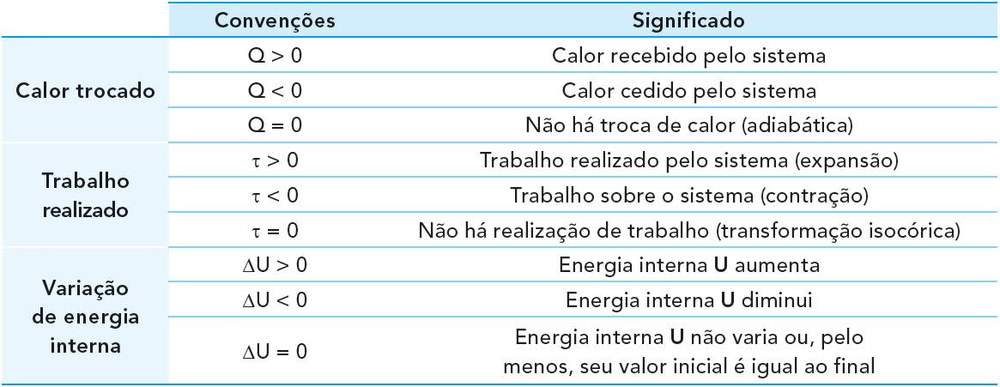
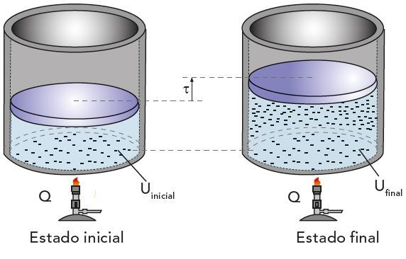

A primeira Lei da Termodinâmica é o princípio da conservação de energia para os sistemas termodinâmicos, ela torna possível prever como o sistema gasoso vai se comportar ao sofrer uma transformação termodinâmica. A energia total desse sistema sempre se mantém constante, já que ela não é perdida, mas sim, transformada. Os conceitos consistem em energia interna, calor e trabalho, que pertence ao âmbito das máquinas térmicas. “A variação da energia interna de um sistema termodinâmico corresponde à diferença entre a quantidade de calor por ele absorvida e a quantidade de trabalho que esse sistema realiza.”
-A Primeira Lei da Termodinâmica promove conservação de energia ao relacionar o calor com a energia interna e o trabalho realizado pelo gás ou sobre ele.
-Os principais processos termodinâmicos são analisados sob o ponto de vista da Primeira Lei da Termodinâmica, de forma a verificar as transformações isotérmica, isocórica, isobárica e adiabática.
Fórmula: Δ/U = Q - t
ΔU – variação de energia interna (cal ou J)
Q – calor (cal ou J)
τ – trabalho (cal ou J)
Analisando a imagem a seguir, se percebe que em todos os processos termodinâmicos a variação da energia interna é resultado da forma como o calor trocado Q e o trabalho realizado se relacionam no sistema.
